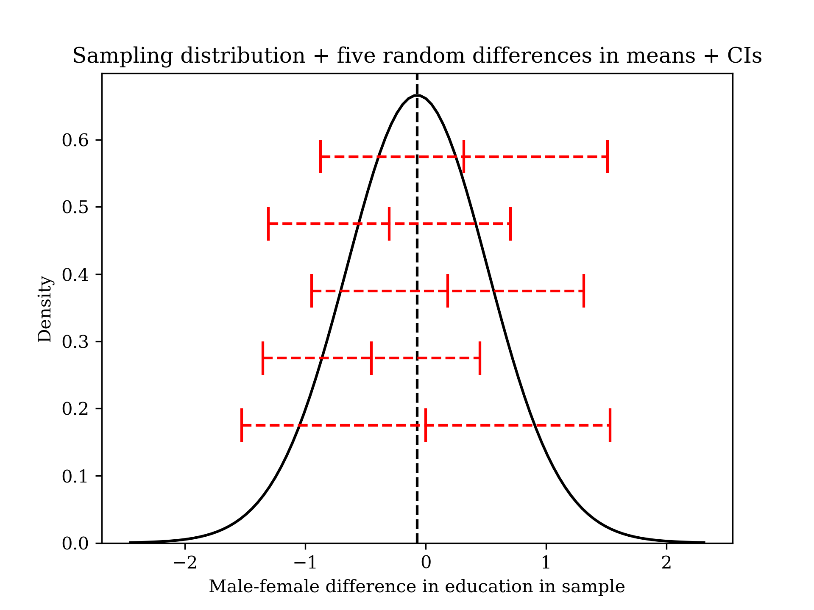
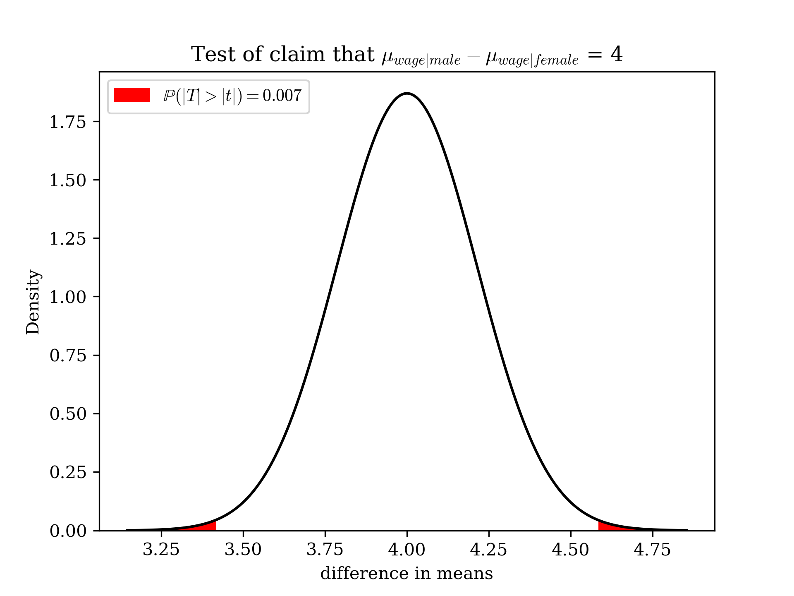

basic math for social sciences II: proportions, differences in means and ANOVA#
Inference on proportions#
In the last chapter, we learned about two ways to make inferences about population means from the means in our sample. We saw how this worked for a simple quantitative outcome. What if we happen to have a binary variable, or a set of binary variables that represent all outcomes for some polytomous variable?
This turns out to be very easy to calculate. All we need to do is recall that the population variance of a binary variable is specifically \({\pi}(1-{\pi})\), and its estimate in the sample is \({\widehat{\pi}}(1-{\widehat{\pi}})\).
Then, we simply replace, in the sampling variance formula \(\frac{\sigma^2}{n}\), \(\sigma^2\) with \({\pi}(1-{\pi})\). Then, the sampling variance is \(\frac{{\pi}(1-{\pi})}{n}\), and the standard error is \(\sqrt{\frac{{\pi}(1-{\pi})}{n}}\). The last question is how to estimate this in the sample. Here, there is a slightly funny set-up. If we assume the null is true, \(\pi = \pi_0\), so we plug in the null hypothesis value when doing a hypothesis test: \(\sqrt{\frac{{\pi_0}(1-{\pi_0})}{n}}\). If we make no particular assumption about any null, as when we do a confidence interval, we simply use the observed proportion, \(\sqrt{\frac{{\widehat{\pi}}(1-{\widehat{\pi}})}{n}}\). Generally, software will do this for you correctly.
There are two caveats here. First, proportions are z-distributed, not t-distributed because we don’t have to separately estimate the mean and standard error since the latter is a function of the mean for proportions (but not quantitative variables generally). So, our original, simpler approach from last time works. Second, we should avoid inference on observed or hypothetical proportions very near to 0 or 1 unless the sample size is large since otherwise the tails of the sampling distribution will be truncated. Usually
Let’s do a bit of practice. Suppose that you have 80 observations of the binary outcome “prays daily”, and you wish to test the hypothesis that \(\frac{1}{2}\) of your population prays so often: \(H_0: \pi_{\text{prays daily}} = 0.5\) and your alternative is two-sided (as all of ours are in this class for simplicity). You observe \(\widehat{\pi} = \frac{3}{8}\). The generic formula for a standardized test statistic is always this:
Here, we have…
We could also calculate a 95 confidence interval for this observed datum. We simply use our new standard error. The generic formula for a CI is always this, where “critical value” is the jargon for “the number of standard deviations on some sampling distribution which include the middle C percent of the area under the curve”.
Here, we have…
Conclude: with 95 percent confidence we think that the true population proportion of people who daily pray is within about 27 and 48 percent.
Bivariate analysis: tests for a difference in means#
Suppose, now, that we are interested in determining whether two groups differ on some key quantitative outcome variable, such as their level of education or income. Let’s be clear and formalistic about what we are after: we want to know whether or not, say, \(\mu_{income | white} = \mu_{income | black}\) or \(\mu_{education | male} = \mu_{education | female}\), where, to avoid the confusion caused by double subscripts, I’ve used the standard notation of a vertical bar to indicate “given that one is…”.
An obvious move here is just to replace these with their sample equivalents. So we might check whether \(\overline{educ}_{male} = \overline{educ}_{female}\). And, in fact, this is exactly the right idea. The question now, however, is whether or not this difference is liable to have arisen by chance.
Now, we when went over inference before, this might have seemed somewhat trivial. The sample mean for education is, say, 13.5. We can test whether it’s likely equal to some hypothesized value, say \(\mu_0 = 14\) or not, or we can calculate a confidence interval and give a range of plausible values for the population mean, \(\mu_{educ}\), but these are, I admit, relatively anodyne questions.
What’s perhaps more interesting is testing whether an observed difference in the sample means of two groups indicates an actual difference in the population means of those groups—these questions are, perhaps intrinsically, more contentious and often more interesting for that reason.
It’s actually quite straightforward to extend our previous testing methods to cover this case!
The sampling distribution of a difference in means is approximately Normal. It is centered at the true population difference in means, \(\mu_1 - \mu_2\), and it has a standard error that is also very intuitive. Our confidence intervals and \(\mathbb{P}\)-values have the same interpretive meaning: the confidence interval with confidence C is a band of values that, prior to the selection of the sample, had a C percent chance of including the true population mean difference. The \(\mathbb{P}\)-value is the probability of observing sample data such as these conditional on the null hypothesis being true: \(\mathbb{P}(\text{sample difference} | H_0)\).
Since the sample means \(\overline{Y}_1\) and \(\overline{Y}_2\) are independent random variables, the variance of their difference is just the sum of their variances (see previous appendix for a proof), and the variance of each is the formula we learned before: \(\frac{\sigma^2_Y}{n}\); so, the variance of the difference is \(\frac{\sigma^2_{Y1}}{n} + \frac{\sigma^2_{Y2}}{n}\), and the standard error is simply \(\sqrt{\frac{\sigma^2_{Y1}}{n} + \frac{\sigma^2_{Y2}}{n}}\).
Our confidence interval is the following: \(\overline{y}_1 -\overline{y}_2 +/- t_C*\sqrt{\frac{\sigma^2_{Y1}}{n} + \frac{\sigma^2_{Y2}}{n}}\). Recall that \(t_C\) is the number of standard deviations on the t-shaped sampling distribution that include the middle C percent of the area under the curve. This depends on the degrees of freedom, which are hard to calculate for a difference in means by hand, so we just use the smaller of the subsamples \(n_{smaller} - 1\). You’ll need to look these up with software.
Our test statistic is the following: \(\frac{(\overline{Y}_1 - \overline{Y}_2) - (\mu_1 - \mu_2)}{\sqrt{\frac{\sigma^2_{Y1}}{n} + \frac{\sigma^2_{Y2}}{n}}}\). Note that we typically, though not always, test the claim that the mean difference is zero, so the test statistic, in that case, simplifies to \(\frac{\overline{Y}_1 - \overline{Y}_2}{\sqrt{\frac{\sigma^2_{Y1}}{n} + \frac{\sigma^2_{Y2}}{n}}}\).
Let’s now examine a “population” (actually, the 2018 GSS) that we happen to have data on. In this population, we know that the true difference in educational attainment by sex is small but perceptible: 0.07 years in favor of women.
If we pull five samples (\(n = 50\) for each group) from this population and calculate confidence intervals, we should expect all of them to include the true mean difference somewhere inside, and indeed, they do (in this particular simulation, though it would not be “wrong” if they didn’t since probability refers to long-run percentages).

Now, let’s examine some actual data. Suppose that you are interested in coming up with a plausible range of values for the difference in mean hourly wages among young men and women (say, under 40) with bachelor’s degrees with 95 percent confidence. The mean for men is 34.25 and the sample variance is 277.19 (\(n = 10,438\)); the mean for women is 29.67 and the sample variance is 252.17 (\(n = 11,772\)). The smaller of the two subsamples is very large, so our 95 percent CI t-statistic happens to just be 1.96 (as it is with a perfectly Normal distribution). Using our formula from above, we find that our 95 CI is \((34.25 - 29.67) +/- 1.96*\sqrt{\frac{252.17}{10,437} + \frac{252.17}{11,772}} =\) \\(4.16/hr, \\\)5.00/hr.
What if you wanted to test the claim that the difference is equal to \\(4.00/hr in favor of men? We previously calculated the standard error for the difference as 0.213495. So, now we simply take the observed difference less the proposed difference and divide by the SE: \)\frac{(34.25-29.67) - (4)}{0.213495} = 2.72\(. We can then look up the two-sided \)\mathbb{P}\(-value of this test statistic; it happens to be 0.007. Since our conventional \)\alpha\( is 0.05, we reject the null hypothesis at this level. We could also have simply observed that our 95 CI does not include 4. Below is an illustration of our \)\mathbb{P}$-value, using the unstandardized sampling distribution (the probability would be the same, just with a different mean and standard deviation of the curve, if we used the standardized difference).

Introduction to modeling: analysis of variance (ANOVA)#
Above, we discussed one horn of inferential statistics, that of checking whether an observed difference between two groups is statistically significant. But we can also ask other interesting questions that will be useful to us later, such as how well group-identification with more than two groups explains outcomes: how good is a model that says that \(\text{education} = f(\text{gender}) + e\).
Let’s begin by learning a simple form of what is called regression; the name is somewhat unappealing, but the idea is that regression is fundamentally a form of modeling one outcome as a function of one or more predictors[1].
If we have a simple situation where we think that outcomes in a variable are different as a function of group membership, we can write a model for that and test out our model on data. Now, in reality, unless we have an experimental setting (where assignment to treatment/control should be the only thing that matters), probably something more than group membership matters, but seeing how group membership matters is a good way to begin learning this material.
Let’s consider the total variance of the outcome, \( \frac{\sum_{i=1}^n (y_i - \bar{y})^2}{n-1}\). If we think our model is a good fit, it should be able, in some sense, to explain this variance; incidentally, we can also just omit the denominator \(\frac{1}{n-1}\) here because we’ll just be splitting the variance into different component parts—this is known as the total sum of squares (TSS). In other words, once we calculate our model, the variation of observations around our predicted values (the “model sum of squares”) should generally be large relative to the total sum of squares.[2]
It turns out, unsurprisingly, that if our model is something like this …
…then the best predictions are simply the group means for each variable.
Double summation#
We can calculate the fit of our model in this simple case by observing that the total sum of squares can be broken down in the following way. Let \(n_j\) represent the number of subjects in the \(j^{\text{th}}\) group, a represent the number of groups, and j index the group number.
Double summations can be understood in a couple of different ways. Consider a simple example such as the following:
The second summation can be thought of in two ways. First, we have an extra “dimension” to the sum. This is true even if there is no second variable! For example, although \(\sum_{i=1}^5 i = 15\) (as we would hopefully expect), \(\sum_{j=1}^5 \sum_{i=1}^5 i\) happens to be 75, even though there is no j term at all. We can picture this as a three-dimensional function, where i and j define a two-dimensional plane, with the outcome of the function being the third dimension. In this specific case, the place we are along the \(j^{\text{th}}\) dimension simply happens not to affect the value of the sum.
Second, we have another variable in the sum. This is true even if there is no second dimension! For example, \(\sum_{i=1}^5 i + j = 15 + 5j\). Here, j is a pure variable; we don’t have a \(j^{\text{th}}\) dimension to the sum, so we don’t know how many times to sum over it, but it’s “along for the ride” as we sum over i. This doesn’t really add anything definite to the sum (because j remains a variable: no constant, numerical amount is added); the sum remains definite in only one dimension.
That said, double summations often (typically) involve a dependence on both the extra dimension and the extra variable, however. That is, we can think about a simple one-dimensional sum as becoming essentially a function of two variables \(f: \mathbb{R}^2 \rightarrow \mathbb{R}\), and our new variable j is one of them; we also need to sweep the function along the j dimension, however.
You can think about this in one of two ways. First, without adding any particular shortcuts, you can imagine fixing a value of one of the indices, summing over the other index, and then iterating over the first index. So, with an expression such as \(\sum_{j=1}^5 \sum_{i=1}^5 i + j\), you can imagine letting \(j = 1\), summing over \(\sum_{i=1}^5 i + 1\), setting this sum aside, then letting \(j = 2\), summing over \(\sum_{i=1}^5 i + 2\), and so on, until you exhaust the levels of j. Then, add up all of your stowed-away sums.
An alternative, which leads to some simplifications for simple double summations, is to consider this more abstractly. For each value of j, the summation i does not depend on j. It is just “along for the ride”, so as long as we keep track of how many times we add up j for a “run through” of i, we can pull it out.
Then, we can do the sum over i…
And finally, we can now apply the same logic to i, with respect to j: it doesn’t vary with j, but is merely “along for the ride”, so it can be pulled out, as long as we remember that it’s “going on five rides” with j (the 5 on j can also be pulled out because of the distributive property) …
The ANOVA decomposition#
Let’s resume the ANOVA decomposition. I show the main proof in the text because it’s not very hard to follow.
The rightmost term disappears because, while we sum within a group (within deviation), the group deviation is constant. So, we treat it as a constant, and the within-deviations from the group-level mean sum to zero for any group as proved earlier. Then…
The terms on the right are the squared deviations of the predictions from the sample mean, which can be interpreted as the improvement of our model on the crudest model, the overall mean. It is probably even more useful to recognize that the mean of predictions is also the mean of the observations.[3] Letting \(\widehat{y}\) generically indicate a prediction (which here happen to be the group means \(\overline{y}_j\)) and \(\widetilde{y}\) indicate the predictions for a centered variable, we have that \(MSS = \sum_{i=1}^n (\widehat{y}_i - \overline{y})^2 = \sum_{i=1}^n (\widetilde{y} + \overline{y} - \overline{y})^2 = \sum_{i=1}^n \widetilde{y}^2\). So, our model sum of squares is just the variance of our predictions; it is metaphorically the “length” of our prediction vector (if we also assume that our outcome is centered, the TSS is also a length of a vector).
Finally, what do we do with the information that we obtain? It is conventional to calculate the goodness-of-fit, which is the ratio \(\frac{\text{model sum of squares}}{\text{total sum of squares}}\), which is the ratio of the variance of our predictions (this is also the length of the prediction vector to the outcome vector). A related ratio of variances is the ratio of the variance of our predictions to the residual (unexplained) variance, or the within-group variance, once we adjust for the degrees of freedom for each group \(\frac{\text{mean model sum of squares}}{\text{mean residual sum of squares}}\). This second term has a sampling distribution called the \(F-\)distribution (as in Fisher).
Let’s now walk through an example of ANOVA which will help you see how the summations above should properly be done.
For this analysis, we’ll use the (currently-topical) Titanic survivorship dataset (the original crash, not the 2023 crash). We’ll do something a bit more anodyne than looking at survival rates; instead, we’ll look at fares by passenger class. Technically, it’s a little strange to regard the Titanic data as a “sample” (from what population?), but we can perhaps consider the data to be a random sample from a population of luxury ships at the time. You can pull the data here.
How well does a passenger’s class (on the ship) explain the fare that they paid?
Let’s begin by finding the means for each group, which will also let us calculate the sums of squares within each group. Doing ANOVA totally by hand is somewhat tedious, but I also want to give some sense of how it might be done by hand without just asking a computer program. One compromise is simply telling a computer to calculate the variance within each group, then multiplying by \(n_j - 1\); this is relatively easy in most software.
In this data-set, I find the following:
\begin{array}{|c|c|c|c|} \hline \textbf{group} & \textbf{mean} & \textbf{SS} & \textbf{n} \ \hline \text{1} & \text{84.15} & \text{1320848.9} & \text{216} \ \hline \text{2} & \text{20.66} &\text{32944.87} &\text{184} \ \hline \text{3} & \text{13.71} &\text{67869.31} &\text{487} \ \hline \text{total} & \text{32.31} &\text{2195730.9} &\text{887} \ \hline \end{array}
Summing up the first three columns, I find that \(1320848.9+32944.87+67869.31=1421663.08\). Now, since the residuals from this model are orthogonal to the sum of squares for the model, I could just immediately calculate that \(MSS = TSS - RSS = 2195730.9 - 1421663.08 = 774067.82\), but I will show how to do this by hand as well.
First, we need to simply find the squared deviation of each mean from the total; these are, respectively, \((84.15-32.31)^2 = 2687.39; (20.66-32.31)^2 = 135.72; (13.71-31.31)^2 = 309.76\). However, this is only the sum of squares over the j dimension; we need to also remember that this is a sum of squares over the individuals in the group. Another way to think about it is this: we have found the squared deviation of the prediction from the grand mean for each group, but we want the sum of squares for all actual predictions, i.e. for all observations, not just for groups. So, we multiply by our squared group deviations by the subsample sizes. With some (fairly large) rounding error, we obtain \(756301.35\), which is close enough to our above answer.
Now, we can calculate our two key quantities of interest. First, we calculate the share of variance explained, which is \(\frac{MSS}{TSS} = \frac{774067.82}{2195730.9} = 0.353\), or about 35.3 percent of the variance in the outcome. This tells us that that the class of a passenger was a pretty good predictor of their fare, although maybe less than we would have suspected; there were probably some other influences on their fare, given the ~65 percent of the variance that was unexplained. By the way, you can think of these two sums of squares, MSS and TSS, as being the lengths of two vectors which are the adjacent and hypotenuse of a right triangle. This is hard to draw a graph of since they are vectors in very many dimensions, but the metaphor is quite helpful.
Next, we can calculate the F-ratio. The so-called “global F-test” is a test of the very general null hypothesis \(H_0: \mu_1 = \mu_2 = ... \mu_a\). This is useful only if this null hypothesis is of interest; otherwise, perform tests for a difference in means as appropriate. If it is, it turns out that ratio of two variances has the F-distribution. To adjust for the fact that the space in which the predictors lie is formed by our regressors (the groups) minus one, while the residual term lies in the space orthogonal to it, we need to divide each SS by its df. So, here, \(df_{\text{regression space}} = 3-1, df_{\text{residual space}} = n - df_{\text{regression space}} = 886 - 2 = 884\). So, our F-ratio is \(\frac{\frac{774067.82}{2}}{\frac{1421663.08}{884}} = 240.66\). The associated \(\mathbb{P}-value\) is effectively zero, so I could plot this on a sampling distribution, but it would not be informative since the area under the curve would effectively be zero. You can just know that your F-statistic has its own sampling distribution.
Appendix#
Proof of the variance of a binary variable#
In the following proof, let B indicate a binary variable. Recall from the previous appendix that \(\mathbb{E}[(X-\mu_X)^2] = \mathbb{E}[X^2] - mathbb{E}[X]^2\).
Two-way ANOVA#
We can generalize our decomposition above to so-called two-way ANOVA, although in this case we should note that equal sub-sample sizes now become more important. The idea is straightforward: we decompose the variance into the individual variance, the variance of groups defined by variable A, the variance of groups defined by variable B, and the “interaction effect”. This last term basically represents a special kind of sum of squares: the squared difference between the actual factorial means and {the difference between the sum of the two variable-level means, which represents a kind of counterfactual where the effects of A and B are only additive, and the actual overall mean}. The reason that equal sample sizes become more computationally important here is that we would only expect \(\overline{y}\) to be the sum of \(\overline{y}_A\) and \(\overline{y}_B\) if the sample sizes were the same for each group. We perform basically the same trick as above:
Note that the crossed terms will all cancel, but only if sample sizes are equal. In our first decomposition, the only cross term was, algebraically, \((\overline{y}_{ij} - \overline{y}_{j})(\overline{y}_j - \overline{y})\), and when summing over i, the second term is constant, while the first is zero by definition. However, it could be the case that the second term is non-zero if \(\overline{y} =/= \frac{1}{a}\sum_{j=1}^a \overline{y}_j\); this is generally going to be the case if the \(n_j\) are not equal. The problem is that in the two-way ANOVA case, many of the crossed terms, for example \(\sum_{k=1}^b \sum_{j=1}^a \sum_{i=1}^n [\mathbf{\bar{y}_j} - \mathbf{\bar{y}}][\mathbf{\bar{y}_k} - \mathbf{\bar{y}}]\), are the product of two terms, neither of which is guaranteed to sum to zero since the deviations of the group means from the grand mean are only guaranteed to be zero if the “mean of means” is the true sample mean. This will often be false when the group sizes are not equal.
There is also a geometric interpretation. With just one set of group means, however they are coded (whether we have dummy coding, effects coding, or some set of contrasts), as long we have a set of predictor vectors which are linear combination of simply dummy vectors, they span the same regression space. So, the group A effects partition our regression space, even if they are not, themselves, orthogonal to one another (of course, it would be nice if they did, which can be most naturally achieved with equal sample sizes). But, if we have multiple sets of predictors representing the groups formed by levels of variables A and B, these are not necessarily mutually orthogonal (